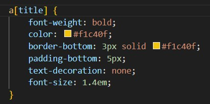

Demostración de Selectores CSS
1. Selector de Tipo
Nombre: Selector de Tipo
Imagen del código CSS:
Descripción:
Este selector se usa para seleccionar y estilizar todas las etiquetas HTML de un tipo específico, como <h1>, <p> o <span>. Aplica los estilos a todos los elementos del mismo tipo en la página.
Imagen del resultado:
2. Selector Universal
Nombre: Selector Universal
Imagen del código CSS:
Descripción:
El selector universal (*) selecciona todos los elementos que son descendientes de otro elemento. Se usa para aplicar un estilo a cada elemento dentro de un contenedor específico.
Imagen del resultado:
3. Selector de Clase
Nombre: Selector de Clase
Imagen del código CSS:
Descripción:
Este selector se usa para estilizar todos los elementos que comparten una clase en particular. Se identifica con un punto (.) seguido del nombre de la clase.
Imagen del resultado:
4. Selector de ID
Nombre: Selector de ID
Imagen del código CSS:
Descripción:
Un selector de ID (#) selecciona un único elemento en la página con un identificador específico. Solo un elemento puede tener un ID en todo el documento.
Imagen del resultado:
5. Selector de Atributo
Nombre: Selector de Atributo
Imagen del código CSS:

Descripción:
Este selector busca elementos que tienen un atributo específico. Se escribe el nombre de la etiqueta seguido del atributo entre corchetes, por ejemplo, a[title] para seleccionar enlaces con un atributo title.
Imagen del resultado:

6. Selector de Descendencia
Nombre: Selector de Descendencia
Imagen del código CSS:
Descripción:
Este selector aplica estilos a un elemento que está contenido dentro de otro. Un espacio entre los selectores indica la relación de descendencia, por ejemplo, article h1 estiliza cualquier <h1> que esté dentro de una etiqueta <article>.
Imagen del resultado:
7. Selector de Hermano Adyacente
Nombre: Selector de Hermano Adyacente
Imagen del código CSS:
Descripción:
Este selector (+) selecciona un elemento que es el siguiente hermano directo de otro. El estilo se aplica solo al elemento que viene inmediatamente después del primero en la estructura del HTML.
Imagen del resultado:
8. Selector de Hermano General
Nombre: Selector de Hermano General
Imagen del código CSS:
Descripción:
Este selector (~) selecciona todos los elementos que son hermanos de otro y que están precedidos por él, sin importar si son el siguiente inmediato. El estilo se aplica a todos los elementos que siguen a un elemento específico.
Imagen del resultado:
9. Pseudo-clase :hover
Nombre: Pseudo-clase :hover
Imagen del código CSS:
Descripción:
Las pseudo-clases permiten aplicar estilos a un elemento basándose en su estado. :hover aplica estilos cuando el cursor se sitúa sobre el elemento.
Imagen del resultado:
10. Pseudo-clase :first-child
Nombre: Pseudo-clase :first-child
Imagen del código CSS:
Descripción:
Este selector aplica estilos a un elemento solo si es el primer hijo de su elemento padre. Es útil para estilizar el primer elemento en una lista o en un grupo de elementos.
Imagen del resultado: